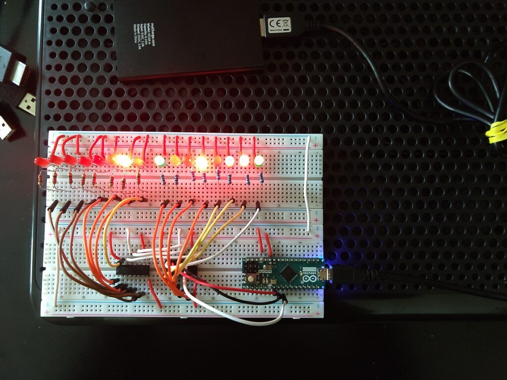
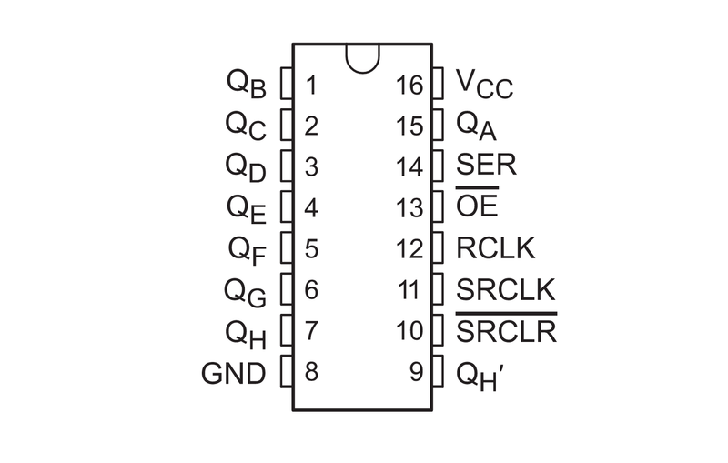

Memory and Counting in Hardware
Electronics have been a secondary hobby of mine for a little while now... though I admit, I'm not too great at it. Actually, its more like an on-and-off thing. I'm trying to make it more of an on thing because it can be an interesting venture. I've done a few projects in the past with Raspberry Pi's and VHDL, which is a start.
Depending on what you want to do, having some sort of memory is an ideal start. I don't have any memory elements other than shift registers, but they can be used like regular set-and-release memory just as easily. And the other nice thing about them is that you can chain them together, which means you can basically make your memory as big or small as you want. For a starter project, I made a 16-bit binary counter. Okay, its really not that impressive; basically, the microcontroller does the counting and math, and the shift registers and a bunch of LED's are used to display the current number.
Here's an image of it running:

Know what the number is? 663. 2^9 + 2^7 + 2^4 + 2^2 + 2^1 + 2^0 = 663. The counter is big-endian.
And for the curious, that's a cell phone charger powering it. Yes, I had to program it at my computer, but the computer was in a room with horrible lighting.
Okay, so as far as parts list goes, here's what I used:
- Arduino- any model is fine, but I only have a Micro
- (x2) SN74HC595N (8-bit shift register)
- (x16) LED lights
- (x16) 220 ohm resistors (this doesn't have to be exact, but it shouldn't be much if any lower)
- Wires
As you can see, I have two types of wire- the regular jumper wires and some thicker doorbell wire. The doorbell wire is great. It is not too hard to work with, and you can buy this huge strand from Lowe's for $10 that will last forever.
Building the Circuit
Here's a diagram of the shift register pinout:

Unfortunately, I don't have a drawing or anything of my circuit, so I will describe it as best as I can.
For the first shift register:
- Connect VCC and GND to voltage and ground, respectively
- Connect OE to to ground
- Connect SRCLR to voltage
- Connect SER to the arduino (on mine, its pin 2). This is the data pin.
- Connect RCLK to the arduino (on mine, pin 3). This is the latch pin.
- Connect SRCLK to the arduino (on mine, pin 4). This is the clock pin.
The second shift register is similar. But because we want to control both at once, there are a few important differences.
- Connect SER to the Qh' pin on the first register
- Connect the RCLK and SRCLK to the RCLK and SRCLK of the first register
On both registers, pins Qa - Qh will connect to LEDs. The overall connect for the LEDs will be `shift register pin -> resistor -> LED -> ground`.
Programming
I'm going to assume you know the basics of Arduino programming. If you have the program installed and know you to compile and upload the example program for making the onboard LED blink, you're good to continue.
I'll post the entire code below, but this is the general idea for programming a shift register. A single shift register works with 1 byte, or 8 bits, which corresponds to the `byte` type in the Arduino language.
- Set the latch pin to 0.
- Enter a loop and write out the byte of data.
- Set the latch pin to 1.
And the algorithm for the loop is (on each loop iteration):
- Set the clock pin to low.
- Set the data pin to the current bit. The current bit is the `data & (1 << i)` where `data` is your byte value, and `i` is your loop index.
- Set the clock pin to high.
- Set the data pin to low (so we can have a stable signal).
The principle is exactly the same whether you have one shift register or 10. In our case we have two, which means we can display 16 bits of data, which corresponds to a `short` in the Arduino language (and all other languages that have it...). The easiest way to do this is first put the algorithm in a separate function, which we will call `writeOut(byte shiftData)`. Then, after you set the latch pin to 0, make two calls to `writeOut`, the first call with one half of the data, the second call with the other half. Then raise the latch pin. Both shift registers will then be populated. If you have 10 shift registers, you would make 10 function calls in between lowering and raising the latch.
If you're wondering about order, think of it as a top-down thing. The first function call will the be the last shift register, and the last function call will be the first shift register. Get it? Shift register...
Source Code
A few points of interest:
- If you have a different Arduino or whatever, make sure to change the pin numbers.
- The `data_block` arrays after the pin sets are two examples you can play with to understand how shift registers work. These are run through the shift registers before counting begins.
- So where did that 65536 come from? This is a 16-bit binary counter, which means we can count up to 2^16 = 65536. By the way, this is an unsigned counter.
So how did we get the number given that its a short (16-bit type)? We had to separate it into bytes. If you look in the for loop where we count up to 65536, you will notice we broke it down into two byte values. The first byte (`byte half1`) is equal to the current number shifted right 8 times. This gets the first 8 bits of the short, which is written to the second shift register. The second byte is simply set equal to the short itself. Because it is a smaller value, the first 8 bits are dropped by the compiler, leaving us only with the low 8 bits. These are written to the first shift register.
Finally, even though the delays are small, it will take a long long time to count all the way up to 65536. Be prepared to wait if you want to see the entire loop iteration. I took the picture in the original post before I began writing anything, and it was at 663. Now, its been over half an hour, I've written this post, and it is at around 34000. And its used about a quarter of that cell phone battery's charge.
I wonder how long it would take to do an integer.... :)
Here's the code:
int latchPin = 3;
int clockPin = 4;
int dataPin = 2;
const int LENGTH = 4;
byte data_block1[LENGTH];
byte data_block2[LENGTH];
void setup() {
Serial.begin(9600);
pinMode(latchPin, OUTPUT);
pinMode(clockPin, OUTPUT);
pinMode(dataPin, OUTPUT);
digitalWrite(latchPin, LOW);
digitalWrite(clockPin, LOW);
digitalWrite(dataPin, LOW);
// Holds data
data_block1[0] = 0xFF;
data_block1[1] = 0x0F;
data_block1[2] = 0xF0;
data_block1[3] = 0x00;
data_block2[0] = 0xFF;
data_block2[1] = 0xF0;
data_block2[2] = 0x0F;
data_block2[3] = 0x00;
}
void writeOut(byte shiftData) {
int pinState = 0;
for (int i = 7; i>=0; i--) {
digitalWrite(clockPin, LOW);
if (shiftData & (1 << i)) {
pinState = 1;
} else {
pinState = 0;
}
digitalWrite(dataPin, pinState);
digitalWrite(clockPin, HIGH);
digitalWrite(dataPin, LOW);
}
}
void loop() {
for (int i = 0; i<LENGTH; i++) {
digitalWrite(latchPin, LOW);
writeOut(data_block1[i]);
writeOut(data_block2[i]);
digitalWrite(latchPin, HIGH);
delay(500);
}
delay(1000);
for (short i = 0; i<65536; i++) {
byte half1 = i >> 8;
byte half2 = i;
digitalWrite(latchPin, LOW);
writeOut(half1);
writeOut(half2);
digitalWrite(latchPin, HIGH);
delay(100);
}
}